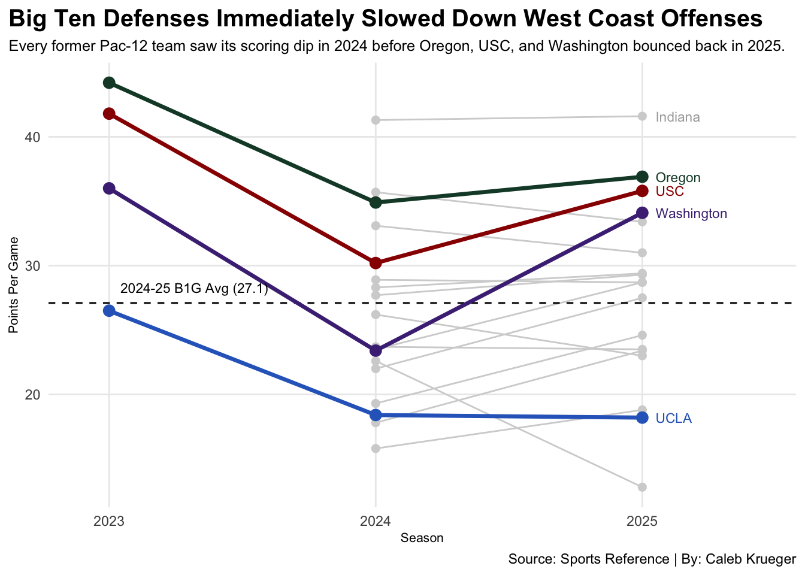
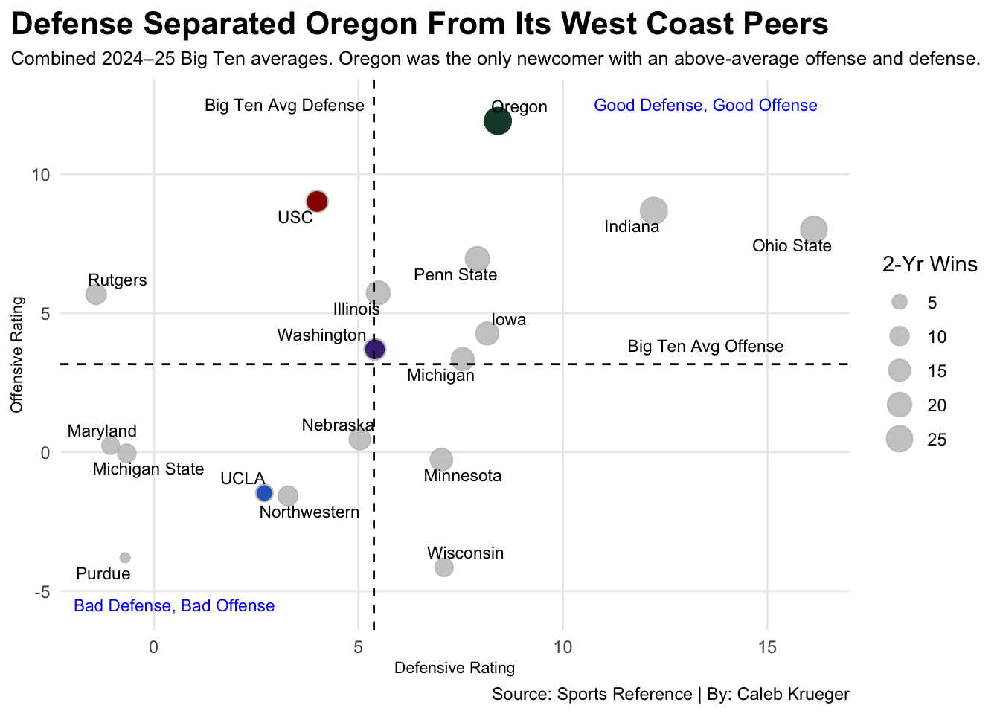

Did high-flying Pac-12 offenses survive Midwest physicality, or do defense and the run game still run the conference?
College Football
Big Ten
Author
Caleb Krueger
Published
November 13, 2026
When Oregon, USC, Washington, and UCLA officially joined the Big Ten in 2024, the biggest question surrounding conference realignment was whether the high-scoring West Coast offenses could survive Midwest physicality. Known for elite quarterback play and high-level passing attacks in the Pac-12, all four programs faced a steep adjustment period against a league that’s historically defined by gritty defenses, ball control, and trench play.
Because the 2026 college football season is still underway, making partial-season statistics uneven due to varying strength of schedule and games played, examining full-season data from 2023 through 2025 provides the best look at how the transition initially played out.
During their final Pac-12 campaign in 2023, Oregon, USC, and Washington all ranked among the nation’s most explosive offenses, each averaging more than 36 points per game, while UCLA trailed the group at 26.5 points per contest. However, year one in the new conference immediately tested those high-scoring averages.
Code
library(tidyverse)library(ggrepel) library(gt)pac12_23<-read_csv("data/pac12_23.csv", skip =1) |>mutate(Season =2023)b1g_24 <-read_csv("data/b1g_24.csv", skip =1) |>mutate(Season =2024)b1g_25 <-read_csv("data/b1g_25.csv", skip =1) |>mutate(Season =2025)west_coast_teams <-c("Oregon", "USC", "Washington", "UCLA")wc_lines <-bind_rows(pac12_23, b1g_24, b1g_25) |>filter(School %in% west_coast_teams)other_b1g_lines <-bind_rows(b1g_24, b1g_25) |>filter(!School %in% west_coast_teams)oregon <- wc_lines |>filter(School =="Oregon")usc <- wc_lines |>filter(School =="USC")washington <- wc_lines |>filter(School =="Washington")ucla <- wc_lines |>filter(School =="UCLA")wc_labels <- wc_lines |>filter(Season ==2025)indiana_label <- other_b1g_lines |>filter(School =="Indiana", Season ==2025)ggplot() +geom_line(data = other_b1g_lines, aes(x = Season, y = Pts, group = School), color ="grey80") +geom_point(data = other_b1g_lines, aes(x = Season, y = Pts), color ="grey80", size =2) +geom_segment(aes(x =2023, xend =2025, y =27.1, yend =27.1), linetype ="dashed", color ="black") +geom_line(data = oregon, aes(x = Season, y = Pts, group = School), color ="#154733", linewidth =1.2) +geom_point(data = oregon, aes(x = Season, y = Pts), color ="#154733", size =3) +geom_line(data = usc, aes(x = Season, y = Pts, group = School), color ="#990000", linewidth =1.2) +geom_point(data = usc, aes(x = Season, y = Pts), color ="#990000", size =3) +geom_line(data = washington, aes(x = Season, y = Pts, group = School), color ="#4B2E83", linewidth =1.2) +geom_point(data = washington, aes(x = Season, y = Pts), color ="#4B2E83", size =3) +geom_line(data = ucla, aes(x = Season, y = Pts, group = School), color ="#2D68C4", linewidth =1.2) +geom_point(data = ucla, aes(x = Season, y = Pts), color ="#2D68C4", size =3) +geom_text(data = wc_labels |>filter(School =="Oregon"), aes(x = Season +0.05, y = Pts, label = School), color ="#154733", hjust =0, fontface ="bold", size =3) +geom_text(data = wc_labels |>filter(School =="USC"), aes(x = Season +0.05, y = Pts, label = School), color ="#990000", hjust =0, fontface ="bold", size =3) +geom_text(data = wc_labels |>filter(School =="Washington"), aes(x = Season +0.05, y = Pts, label = School), color ="#4B2E83", hjust =0, fontface ="bold", size =3) +geom_text(data = wc_labels |>filter(School =="UCLA"), aes(x = Season +0.05, y = Pts, label = School), color ="#2D68C4", hjust =0, fontface ="bold", size =3) +geom_text(data = indiana_label, aes(x = Season +0.05, y = Pts, label = School), color ="grey50", hjust =0, fontface ="bold", size =3) +geom_text(aes(x =2023.32, y =28.3, label ="2024-25 B1G Avg (27.1)"), size =3, fontface ="bold") +scale_x_continuous(breaks =c(2023, 2024, 2025), limits =c(2022.9, 2025.45)) +labs(title ="Big Ten Defenses Immediately Slowed Down West Coast Offenses",subtitle ="Every former Pac-12 team saw its scoring dip in 2024 before Oregon, USC, and Washington bounced back in 2025.",x ="Season", y ="Points Per Game",caption ="Source: Sports Reference | By: Caleb Krueger" ) +theme_minimal() +theme(plot.title =element_text(size =15, face ="bold"),plot.subtitle =element_text(size =9.5),axis.title =element_text(size =8),panel.grid.minor =element_blank(),plot.title.position ="plot",ggsave("image.png") )

Every single former Pac-12 program saw its scoring output drop in its 2024 Big Ten debut. Washington suffered the steepest decline after losing key starters and its coaching staff from its 2023 national championship runner-up roster, going down from 36.0 points per game in 2023 to 23.4 in 2024, well below the Big Ten’s two-year average of 27.1 points per game. Oregon and USC also lost roughly 10 points per game off their 2023 paces, while UCLA plummeted below 19 points per game.
By year two in 2025, three of the four newcomers had fully adjusted to the conference’s hard- nosed defensive schemes. Oregon (36.8 PPG), USC (35.8 PPG), and Washington (34.1 PPG) all surged back near the top of the conference scoring leaderboard, trailing only Indiana. UCLA, on the other hand, remained stagnant at the bottom of the league at 18.4 points per game.
Yet rebounding on the scoreboard did not automatically translate to conference supremacy. To understand why Oregon immediately emerged as an elite Big Ten contender while the other three programs fought for consistency over the first two seasons, you have to look at both sides of the ball.
Code
b1g_24_ratings <-read_csv("data/b1g_24_ratings.csv", skip =1)b1g_25_ratings <-read_csv("data/b1g_25_ratings.csv", skip =1)b1g_combined <-bind_rows(b1g_24_ratings, b1g_25_ratings) |>group_by(School) |>summarise(Wins =sum(W),OSRS =mean(OSRS),DSRS =mean(DSRS),SRS =mean(SRS) )oregon <- b1g_combined |>filter(School =="Oregon")usc <- b1g_combined |>filter(School =="USC")washington <- b1g_combined |>filter(School =="Washington")ucla <- b1g_combined |>filter(School =="UCLA")ggplot() +geom_point(data = b1g_combined, aes(x = DSRS, y = OSRS, size = Wins), color ="grey", alpha =0.8) +geom_point(data = ucla, aes(x = DSRS, y = OSRS), color ="#2D68C4", size =3) +geom_point(data = usc, aes(x = DSRS, y = OSRS), color ="#990000", size =4.2) +geom_point(data = washington, aes(x = DSRS, y = OSRS), color ="#4B2E83", size =4) +geom_point(data = oregon, aes(x = DSRS, y = OSRS), color ="#154733", size =6) +geom_hline(yintercept =3.16, linetype ="dashed", color ="black") +geom_vline(xintercept =5.38, linetype ="dashed", color ="black") +geom_text_repel(data = b1g_combined, aes(x = DSRS, y = OSRS, label = School), size =3) +geom_text(aes(x =13.5, y =12.5, label ="Good Defense, Good Offense"), size =3, color ="blue") +geom_text(aes(x =0.5, y =-5.5, label ="Bad Defense, Bad Offense"), size =3, color ="blue") +geom_text(aes(x =13.5, y =3.85, label ="Big Ten Avg Offense"), size =3, color ="black") +geom_text(aes(x =3.2, y =12.5, label ="Big Ten Avg Defense"), size =3, color ="black") +scale_size(range =c(2, 6), name ="2-Yr Wins") +labs(title ="Defense Separated Oregon From Its West Coast Peers",subtitle ="Combined 2024–25 Big Ten averages. Oregon was the only newcomer with an above-average offense and defense.",x ="Defensive Rating",y ="Offensive Rating",caption ="Source: Sports Reference | By: Caleb Krueger" ) +theme_minimal() +theme(plot.title =element_text(size =16, face ="bold"),plot.subtitle =element_text(size =9.5),axis.title =element_text(size =8),plot.title.position ="plot",panel.grid.minor =element_blank() )

Across the 2024 and 2025 seasons combined, Oregon was the only West Coast newcomer to have both an above-average Big Ten offense and an above-average defense. Landing firmly in the upper-right quadrant alongside conference heavyweights Ohio State, Indiana, and Penn State, the Ducks paired a top-tier offense rating with a lockdown defense to pile up the highest two-year win total among the four arrivals.
USC proved its offense scheme could still score at an elite level, boasting the second-highest offense rating among newcomers, but a below-average defense rating kept the Trojans out of the conference’s top team status. Washington hovered right above the Big Ten average line on both sides of the ball as it rebuilt its roster, while UCLA struggled in the bottom-left quadrant with one of the league’s least efficient offenses and defenses across 2024 and 2025.
While defenses separated the true contenders from the pack, a closer look at the offensive numbers reveals how West Coast style actually translated to the Midwest.
Code
b1g_offense <-bind_rows(b1g_24, b1g_25) |>group_by(School) |>summarise(Pass_YPG =mean(`Yds...8`),Rush_YPG =mean(`Yds...11`),Total_YPG =mean(`Yds...15`) ) |>arrange(desc(Total_YPG))b1g_offense |>gt() |>cols_label(School ="Team",Pass_YPG ="Pass YPG",Rush_YPG ="Rush YPG",Total_YPG ="Total YPG" ) |>tab_header(title ="Passing Traveled to the Big Ten — Rushing Didn't for All Four",subtitle ="Two-year offensive averages across 2024-25. Oregon and USC led the Big Ten in total yardage, while UCLA's ground game stalled." ) |>fmt_number(columns =c(Pass_YPG, Rush_YPG, Total_YPG),decimals =1 ) |>tab_style(style =cell_text(color ="black", weight ="bold", align ="left"),locations =cells_title("title") ) |>tab_style(style =cell_text(color ="black", align ="left"),locations =cells_title("subtitle") ) |>tab_source_note(source_note =md("**Source:** Sports Reference | **By:** Caleb Krueger") ) |>tab_style(locations =cells_column_labels(columns =everything()),style =list(cell_borders(sides ="bottom", weight =px(3)),cell_text(weight ="bold", size =12) ) ) |>opt_row_striping() |>opt_table_lines("none") |>tab_style(style =list(cell_fill(color ="#154733"),cell_text(color ="white") ),locations =cells_body(rows = School =="Oregon") ) |>tab_style(style =list(cell_fill(color ="#990000"),cell_text(color ="white") ),locations =cells_body(rows = School =="USC") ) |>tab_style(style =list(cell_fill(color ="#4B2E83"),cell_text(color ="white") ),locations =cells_body(rows = School =="Washington") ) |>tab_style(style =list(cell_fill(color ="#2D68C4"),cell_text(color ="white") ),locations =cells_body(rows = School =="UCLA") )
Passing Traveled to the Big Ten — Rushing Didn't for All Four
Two-year offensive averages across 2024-25. Oregon and USC led the Big Ten in total yardage, while UCLA's ground game stalled.
Team
Pass YPG
Rush YPG
Total YPG
USC
293.9
157.4
451.4
Oregon
266.6
178.2
444.8
Indiana
250.2
189.0
439.2
Ohio State
265.6
160.4
426.0
Washington
253.1
147.2
400.2
Penn State
207.8
188.4
396.1
Rutgers
236.8
158.2
394.9
Maryland
265.7
107.3
373.1
Illinois
223.5
145.8
369.3
Nebraska
226.5
138.2
364.8
Michigan
157.9
183.7
341.5
Michigan State
220.4
119.5
339.9
Iowa
137.4
187.1
324.5
UCLA
211.2
113.1
324.4
Purdue
200.6
120.8
321.5
Minnesota
206.1
109.4
315.5
Northwestern
185.9
129.3
315.2
Wisconsin
166.6
135.2
301.7
Source: Sports Reference | By: Caleb Krueger
Even with the initial 2024 scoring dip, West Coast passing attacks didn’t just survive in the Big Ten, they out-passed the entire conference in yardage. Over the two-year-span from 2024 to 2025 USC (451.4 total YPG) and Oregon (444.8 total YPG) led the Big Ten in total offense, with Washington (400.2 total YPG) also in the top five alongside Indiana and Ohio State. All three programs averaged more than 253 passing yards per game, proving that once they adjusted to their new surroundings, aerial attacks could still thrive against Big Ten secondaries.
The difference between elite offensive production and a stagnant offense production came down to balance in the run game. Oregon paired its 266.6 passing yards per game with a physical 178.2 rushing yards per game, giving the Ducks the ground presence required to wear down Big Ten Fronts. USC (157.4 rush YPG) and Washington (147.2 rush YPG) also maintained reliable rushing averages to keep opposing defenses on their toes.
Even UCLA proved its passing game could move the ball, averaging a respectable 221.2 passing yards per game, out throwing better offenses such as Penn State (207.8 passing YPG), Michigan (157.9 passing YPG), and Iowa (137.4 passing YPG). However, the Bruins’ ground game stalled out completely at just 113.1 rushing yards per game, dragging their total offense down to 324.4 yards per contest and leaving them one-dimensional and towards the bottom of the league in scoring through 2025.
Now past the midpoint of the 2026 seasons, the lessons from the first two seasons are playing out in dramatic fashion. While Oregon, USC, and Washington need just one offseason in 2025 to adapt their offenses to Big Ten play, UCLA’s full roster and scheme overhaul simply took an extra year to materialize. After sitting in the bottom-left quadrant for two straight seasons, the Bruins have flipped the script in 2026, surging to an undefeated start (9-0 overall, 6-0 Big Ten) behind a revitalized offense and hard nose defense, including a statement 17-15 road win at Autzen Stadium over Oregon and a 34-20 road win at Minnesota this past weekend.
Meanwhile, the other three newcomers are battling through the weekly grind of conference play. USC (7-2, 4-2 Big Ten) and Oregon (6-3, 4-2 Big Ten) sit in the upper tier of the conference standings behind high-powered, balanced attacks, with the Ducks bouncing back from a midseason offensive slump with a massive 41-28 road win at Ohio State this past Saturday. Washington (5-4, 2-4 Big Ten) remains in the middle of the pack after coming up just short in a 28-25 battle against Penn State. Ultimately, nearly three years of Big Ten expansion has proven that while West Coast passing can rack up yards anywhere, winning consistently in the Midwest requires a complete defense, a balanced rushing attack, and good trench play.